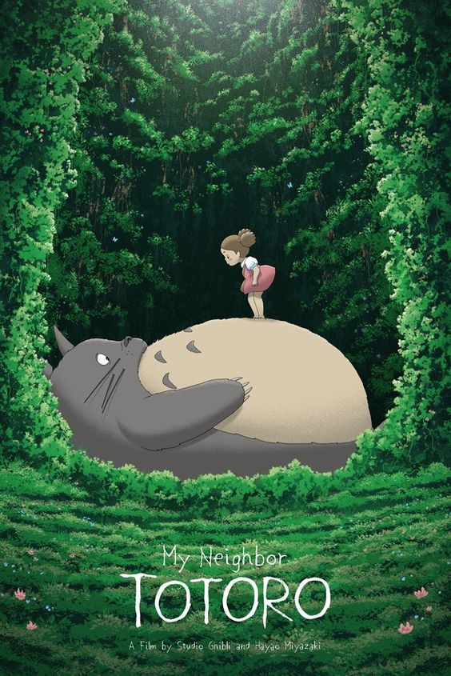
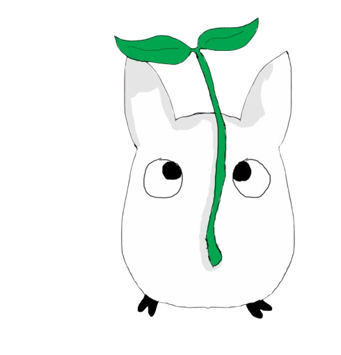

---Studio Ghibli---
  O Studio Ghibli é um estúdio de animação japonês baseado em Koganei, Tóquio.Tem forte presença na indústria de animação e ampliou seu portfólio para incluir diversos formatos de mídia, como curtas-metragens, comerciais de televisão e dois filmes para televisão sendo um deles Meu Amigo Totoro.
O Studio Ghibli é um estúdio de animação japonês baseado em Koganei, Tóquio.Tem forte presença na indústria de animação e ampliou seu portfólio para incluir diversos formatos de mídia, como curtas-metragens, comerciais de televisão e dois filmes para televisão sendo um deles Meu Amigo Totoro.
Clique aqui e conheça os personagens! ➤
Clique aqui para voltar a página inicial! ➤